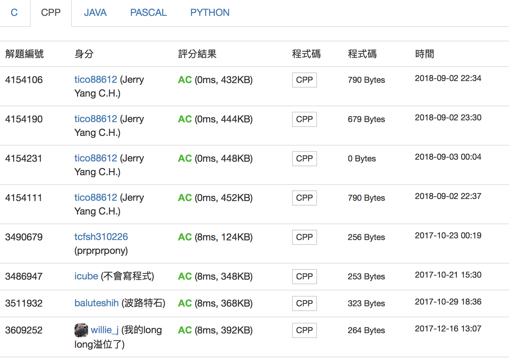

<!DOCTYPE html>
<html>
<head><meta name="generator" content="Hexo 3.9.0">
  <!-- hexo-inject:begin --><!-- hexo-inject:end --><meta charset="utf-8">
  <meta http-equiv="X-UA-Compatible" content="IE=edge">
  
  <!-- MathJax配置，可通过单美元符号书写行内公式等 -->
<script type="text/x-mathjax-config">
  MathJax.Hub.Config({
    "HTML-CSS": {
      preferredFont: "TeX",
      availableFonts: ["STIX","TeX"],
      linebreaks: { automatic:true },
      EqnChunk: (MathJax.Hub.Browser.isMobile ? 10 : 50)
    },
    tex2jax: {
      inlineMath: [ ["$", "$"], ["\\(","\\)"] ],
      processEscapes: true,
      ignoreClass: "tex2jax_ignore|dno",
      skipTags: ['script', 'noscript', 'style', 'textarea', 'pre', 'code']
    },
    TeX: {
      equationNumbers: { autoNumber: "AMS" },
      noUndefined: { attributes: { mathcolor: "red", mathbackground: "#FFEEEE", mathsize: "90%" } },
      Macros: { href: "{}" }
    },
    messageStyle: "none"
  });
</script>
<!-- 给MathJax元素添加has-jax class -->
<script type="text/x-mathjax-config">
  MathJax.Hub.Queue(function() {
    var all = MathJax.Hub.getAllJax(), i;
    for(i=0; i < all.length; i += 1) {
      all[i].SourceElement().parentNode.className += (all[i].SourceElement().parentNode.className ? ' ' : '') + 'has-jax';
    }
  });
</script>
<!-- 通过连接CDN加载MathJax的js代码 -->
<script type="text/javascript" async src="https://cdnjs.cloudflare.com/ajax/libs/mathjax/2.7.1/MathJax.js?config=TeX-MML-AM_CHTML">
</script>
  <title>c311. PC:分組之塔 | Jerry Yang&#39;s Blog</title>
  <meta name="description" content>
  <meta name="keywords" content>
  <meta name="HandheldFriendly" content="True">
  <meta name="apple-mobile-web-app-capable" content="yes">
  <link rel="shortcut icon" href="/">
  <link rel="alternate" href="/atom.xml" title="Jerry Yang's Blog">
  <meta name="viewport" content="width=device-width, initial-scale=1, maximum-scale=1">
  <meta name="description" content="題目 Problem題目連結：https://zerojudge.tw/ShowProblem?problemid=c311">
<meta name="keywords" content="負數取Mod,倍數判斷法">
<meta property="og:type" content="article">
<meta property="og:title" content="c311. PC:分組之塔">
<meta property="og:url" content="https://blog.yangjerry.tw/2018/09/02/zj-c311/index.html">
<meta property="og:site_name" content="Jerry Yang&#39;s Blog">
<meta property="og:description" content="題目 Problem題目連結：https://zerojudge.tw/ShowProblem?problemid=c311">
<meta property="og:locale" content="zh-TW">
<meta property="og:image" content="https://blog.yangjerry.tw/2018/09/02/zj-c311/wtf.png">
<meta property="og:image" content="https://blog.yangjerry.tw/2018/09/02/zj-c311/0ms.png">
<meta property="og:image" content="https://blog.yangjerry.tw/2018/09/02/zj-c311/who_cares.png">
<meta property="og:updated_time" content="2018-09-02T16:41:16.660Z">
<meta name="twitter:card" content="summary">
<meta name="twitter:title" content="c311. PC:分組之塔">
<meta name="twitter:description" content="題目 Problem題目連結：https://zerojudge.tw/ShowProblem?problemid=c311">
<meta name="twitter:image" content="https://blog.yangjerry.tw/2018/09/02/zj-c311/wtf.png">
    
  <link href="https://fonts.googleapis.com/css?family=Inconsolata|Titillium+Web" rel="stylesheet">
  <link href="https://fonts.googleapis.com/css?family=Roboto+Mono" rel="stylesheet">
  <link href="//cdn.bootcss.com/node-waves/0.7.5/waves.min.css" rel="stylesheet">
  <link rel="stylesheet" href="/style.css">
  <script>
    function setLoadingBarProgress(num) {
      document.getElementById('loading-bar').style.width=num+"%";
    }
  </script>
  <!-- Global site tag (gtag.js) - Google Analytics -->
  <script async src="https://www.googletagmanager.com/gtag/js?id=UA-116676990-3"></script>
  <script>
    window.dataLayer = window.dataLayer || [];
    function gtag() { dataLayer.push(arguments); }
    gtag('js', new Date());

    gtag('config', 'UA-116676990-3');
  </script>
<link rel="alternate" href="/atom.xml" title="Jerry Yang's Blog" type="application/atom+xml"><!-- hexo-inject:begin --><!-- hexo-inject:end -->
</head>
</html>
<body>
  <!-- hexo-inject:begin --><!-- hexo-inject:end --><div id="loading-bar-wrapper">
  <div id="loading-bar"></div>
</div>


  <script>setLoadingBarProgress(20)</script> 
  <header class="l_header">
	<div class='wrapper'>
		<div class="nav-main container container--flex">
			<a class="logo flat-box" href='/' >
				Jerry Yang's Blog
			</a>
			<div class='menu'>
				<ul class='h-list'>
					
						<li>
							<a class='flat-box nav-yangjerry' href='https://yangjerry.tw/'>
								Home
							</a>
						</li>
					
						<li>
							<a class='flat-box nav-home' href='/'>
								Blog
							</a>
						</li>
					
						<li>
							<a class='flat-box nav-archives' href='/archives'>
								Archives
							</a>
						</li>
					
						<li>
							<a class='flat-box nav-twitch' href='https://twitch.tv/tico88612'>
								Twitch
							</a>
						</li>
					
						<li>
							<a class='flat-box nav-about' href='/about'>
								About (unfinshed)
							</a>
						</li>
					
				</ul>
				<div class='underline'></div>
			</div>
			
				<div class="m_search">
					<form name="searchform" class="form u-search-form">
						<input type="text" class="input u-search-input" placeholder="Search" />
						<span class="icon icon-search"></span>
					</form>
				</div>
			
			<ul class='switcher h-list'>
				
					<li class='s-search'><a href='javascript:void(0)'><span class="icon icon-search flat-box"></span></a></li>
				
				<li class='s-menu'><a href='javascript:void(0)'><span class="icon icon-menu flat-box"></span></a></li>
			</ul>
		</div>
		
		<div class='nav-sub container container--flex'>
			<a class="logo" class="flat-box" href='javascript:void(0)'>
				Word of Forks
			</a>

			<ul class='switcher h-list'>
				<li class='s-comment'><a href='javascript:void(0)'><span class="icon icon-chat_bubble_outline flat-box"></span></a></li>
				<li class='s-top'><a href='javascript:void(0)'><span class="icon icon-arrow_upward flat-box"></span></a></li>
				<li class='s-toc'><a href='javascript:void(0)'><span class="icon icon-format_list_numbered flat-box"></span></a></li>
			</ul>
		</div>
	</div>
</header>
<aside class="menu-phone">
	<nav>
		
			<a href="https://yangjerry.tw/" class="nav-yangjerry nav">
				Home
			</a>
		
			<a href="/" class="nav-home nav">
				Blog
			</a>
		
			<a href="/archives" class="nav-archives nav">
				Archives
			</a>
		
			<a href="https://twitch.tv/tico88612" class="nav-twitch nav">
				Twitch
			</a>
		
			<a href="/about" class="nav-about nav">
				About (unfinshed)
			</a>
		
	</nav>
</aside>

    <script>setLoadingBarProgress(40);</script>
  <div class="l_body">
    <div class='container clearfix'>
      <div class='l_main'>
        <article id="post-zj-c311"
  class="post white-box article-type-post"
  itemscope itemprop="blogPost">
	<section class='meta'>
	<h2 class="title">
  	<a href="/2018/09/02/zj-c311/">
    	c311. PC:分組之塔
    </a>
  </h2>
	<time>
	  9月 2, 2018
	</time>
	
    
    <div class='cats'>
        <a href="/categories/解題區/">解題區</a>, <a href="/categories/解題區/解題報告書-ZeroJudge/">解題報告書 - ZeroJudge</a>
    </div>

	</section>
	
		<section class="toc-wrapper"><ol class="toc"><li class="toc-item toc-level-2"><a class="toc-link" href="#題目-Problem"><span class="toc-number">1.</span> <span class="toc-text">題目 Problem</span></a><ol class="toc-child"><li class="toc-item toc-level-3"><a class="toc-link" href="#敘述-Description"><span class="toc-number">1.1.</span> <span class="toc-text">敘述 Description</span></a></li><li class="toc-item toc-level-3"><a class="toc-link" href="#輸入-Input"><span class="toc-number">1.2.</span> <span class="toc-text">輸入 Input</span></a></li><li class="toc-item toc-level-3"><a class="toc-link" href="#輸出-Output"><span class="toc-number">1.3.</span> <span class="toc-text">輸出 Output</span></a></li><li class="toc-item toc-level-3"><a class="toc-link" href="#範例輸入-Sample-Input"><span class="toc-number">1.4.</span> <span class="toc-text">範例輸入 Sample Input</span></a></li><li class="toc-item toc-level-3"><a class="toc-link" href="#範例輸出-Sample-Output"><span class="toc-number">1.5.</span> <span class="toc-text">範例輸出 Sample Output</span></a></li><li class="toc-item toc-level-3"><a class="toc-link" href="#提示-Hint"><span class="toc-number">1.6.</span> <span class="toc-text">提示 Hint</span></a></li></ol></li><li class="toc-item toc-level-2"><a class="toc-link" href="#題解-Solution"><span class="toc-number">2.</span> <span class="toc-text">題解 Solution</span></a><ol class="toc-child"><li class="toc-item toc-level-3"><a class="toc-link" href="#程式碼-Accepted-Code"><span class="toc-number">2.1.</span> <span class="toc-text">程式碼 Accepted Code</span></a></li></ol></li><li class="toc-item toc-level-2"><a class="toc-link" href="#後記-Afterword"><span class="toc-number">3.</span> <span class="toc-text">後記 Afterword</span></a></li></ol></section>
	
	<section class="article typo">
  	<div class="article-entry" itemprop="articleBody">
    	<h2 id="題目-Problem"><a href="#題目-Problem" class="headerlink" title="題目 Problem"></a>題目 Problem</h2><p><a href="https://zerojudge.tw/ShowProblem?problemid=c311" target="_blank" rel="noopener">題目連結：https://zerojudge.tw/ShowProblem?problemid=c311</a></p>
<a id="more"></a>
<h3 id="敘述-Description"><a href="#敘述-Description" class="headerlink" title="敘述 Description"></a>敘述 Description</h3><p>進到了這個房間，小風終於遇到第一個塔主，這個塔主精神有點疾病，他有超級多的部下，而他想要將這些人以91個人為單位分為一組，而多出來的人就要把他殺掉。<br>然而他實在是太懶惰了，不想要自己算要殺掉多少人，於是他命令小風幫他算出人數，否則第一個先死的就是小風了。<br>無奈小風的除法沒有學好，所以他算不出來。於是小風再次需要各位的幫忙，請算出塔主需要殺掉的人數。</p>
<h3 id="輸入-Input"><a href="#輸入-Input" class="headerlink" title="輸入 Input"></a>輸入 Input</h3><p>輸入有多筆測資，並以EOF作為結尾。<br>每一筆測資包含一個正整數n，代表塔主的部下人數。</p>
<p>10%的測資滿足n&lt;=10^9<br>40%的測資滿足n&lt;=10^18<br>100%的測資滿足n&lt;=10^100000</p>
<h3 id="輸出-Output"><a href="#輸出-Output" class="headerlink" title="輸出 Output"></a>輸出 Output</h3><p>對於每一筆輸入 請輸出塔主需要殺掉的人數</p>
<h3 id="範例輸入-Sample-Input"><a href="#範例輸入-Sample-Input" class="headerlink" title="範例輸入 Sample Input"></a>範例輸入 Sample Input</h3><figure class="highlight plain"><table><tr><td class="gutter"><pre><span class="line">1</span><br><span class="line">2</span><br><span class="line">3</span><br></pre></td><td class="code"><pre><span class="line">92</span><br><span class="line">93</span><br><span class="line">91</span><br></pre></td></tr></table></figure>

<h3 id="範例輸出-Sample-Output"><a href="#範例輸出-Sample-Output" class="headerlink" title="範例輸出 Sample Output"></a>範例輸出 Sample Output</h3><figure class="highlight plain"><table><tr><td class="gutter"><pre><span class="line">1</span><br><span class="line">2</span><br><span class="line">3</span><br></pre></td><td class="code"><pre><span class="line">1</span><br><span class="line">2</span><br><span class="line">0</span><br></pre></td></tr></table></figure>

<h3 id="提示-Hint"><a href="#提示-Hint" class="headerlink" title="提示 Hint"></a>提示 Hint</h3><h2 id="題解-Solution"><a href="#題解-Solution" class="headerlink" title="題解 Solution"></a>題解 Solution</h2><p>如何判斷數字是不是$7$的倍數跟$13$的倍數<br>當然是打開 Google 查啊（Ｘ）</p>
<p>7的倍數：由個位數起每三位數字一節，各奇數節的和與偶數節的和相減，其差是7的倍數。<br>13的倍數：由個位數起每三位數字一節，各奇數節的和與偶數節的和相減，其差是13的倍數。<br>（<a href="https://leestar2018.blogspot.com/2016/09/113.html" target="_blank" rel="noopener">文字來源：https://leestar2018.blogspot.com/2016/09/113.html</a>）</p>
<p>把數字長度補到$3$的倍數就可以算了</p>
<p>反正數字都一樣，就直接 $mod\ 91$<br>（繳交後3秒，回傳結果：WA）<br><br>後來想想，我忘了重要關鍵點，因為只是判斷7的倍數或13的倍數，可以不用管正負<br>但！如果是 $mod$ 就要區分正負關係了</p>
<p>正數正常 $mod\ 91$ 就好<br>負數要先 $mod\ 91$ 再加 $91$ 再 $mod\ 91$<br>不知道為什麼的人請去 Google 負數取模</p>
<h3 id="程式碼-Accepted-Code"><a href="#程式碼-Accepted-Code" class="headerlink" title="程式碼 Accepted Code"></a>程式碼 Accepted Code</h3><figure class="highlight cpp"><table><tr><td class="gutter"><pre><span class="line">1</span><br><span class="line">2</span><br><span class="line">3</span><br><span class="line">4</span><br><span class="line">5</span><br><span class="line">6</span><br><span class="line">7</span><br><span class="line">8</span><br><span class="line">9</span><br><span class="line">10</span><br><span class="line">11</span><br><span class="line">12</span><br><span class="line">13</span><br><span class="line">14</span><br><span class="line">15</span><br><span class="line">16</span><br><span class="line">17</span><br><span class="line">18</span><br><span class="line">19</span><br><span class="line">20</span><br><span class="line">21</span><br><span class="line">22</span><br><span class="line">23</span><br><span class="line">24</span><br><span class="line">25</span><br><span class="line">26</span><br><span class="line">27</span><br><span class="line">28</span><br><span class="line">29</span><br><span class="line">30</span><br><span class="line">31</span><br><span class="line">32</span><br></pre></td><td class="code"><pre><span class="line"><span class="meta">#<span class="meta-keyword">include</span> <span class="meta-string">&lt;bits/stdc++.h&gt;</span></span></span><br><span class="line"><span class="meta">#<span class="meta-keyword">define</span> _ ios::sync_with_stdio(0);cin.tie(0);cout.tie(0);</span></span><br><span class="line"><span class="keyword">using</span> <span class="keyword">namespace</span> <span class="built_in">std</span>;</span><br><span class="line"><span class="function"><span class="keyword">int</span> <span class="title">main</span><span class="params">()</span></span>&#123;</span><br><span class="line">	_</span><br><span class="line">	<span class="built_in">string</span> enter;<span class="comment">//192936162 55</span></span><br><span class="line">	<span class="keyword">while</span>(<span class="built_in">cin</span>&gt;&gt;enter)&#123;</span><br><span class="line">		<span class="keyword">int</span> total=<span class="number">0</span>;</span><br><span class="line">		<span class="keyword">int</span> s=enter.length()%<span class="number">3</span>;</span><br><span class="line">		<span class="keyword">if</span>(s==<span class="number">1</span>)</span><br><span class="line">			enter=<span class="string">"00"</span>+enter;</span><br><span class="line">		<span class="keyword">else</span> <span class="keyword">if</span>(s==<span class="number">2</span>)</span><br><span class="line">			enter=<span class="string">"0"</span>+enter;</span><br><span class="line">		<span class="keyword">int</span> p=<span class="number">0</span>;</span><br><span class="line">		<span class="keyword">for</span>(<span class="keyword">int</span> i=enter.length()<span class="number">-3</span>;i&gt;=<span class="number">0</span>;i-=<span class="number">3</span>)&#123;</span><br><span class="line">			<span class="keyword">if</span>(p%<span class="number">2</span>)&#123;</span><br><span class="line">				total-=((enter[i]-<span class="string">'0'</span>)*<span class="number">100</span>+(enter[i+<span class="number">1</span>]-<span class="string">'0'</span>)*<span class="number">10</span>+(enter[i+<span class="number">2</span>]-<span class="string">'0'</span>));</span><br><span class="line">			&#125;</span><br><span class="line">			<span class="keyword">else</span>&#123;</span><br><span class="line">				total+=((enter[i]-<span class="string">'0'</span>)*<span class="number">100</span>+(enter[i+<span class="number">1</span>]-<span class="string">'0'</span>)*<span class="number">10</span>+(enter[i+<span class="number">2</span>]-<span class="string">'0'</span>));</span><br><span class="line">			&#125;</span><br><span class="line">			p++;</span><br><span class="line">		&#125;</span><br><span class="line">		<span class="keyword">int</span> mo=total%<span class="number">91</span>;</span><br><span class="line">		<span class="keyword">if</span>(total&lt;<span class="number">0</span>)</span><br><span class="line">			<span class="built_in">printf</span>(<span class="string">"%d\n"</span>,(<span class="number">91</span>+mo)%<span class="number">91</span>);</span><br><span class="line">		<span class="keyword">else</span></span><br><span class="line">			<span class="built_in">printf</span>(<span class="string">"%d\n"</span>,mo);</span><br><span class="line"></span><br><span class="line">	&#125;</span><br><span class="line">	<span class="keyword">return</span> <span class="number">0</span>;</span><br><span class="line">&#125;</span><br></pre></td></tr></table></figure>

<h2 id="後記-Afterword"><a href="#後記-Afterword" class="headerlink" title="後記 Afterword"></a>後記 Afterword</h2><p>異想不到的事，這題我是第一個 $0ms$ 完成<br><br>畢竟 ZeroJudge 有改版過<br>效能應該有提升<br>但，套用憲哥說的一句話<br></p>
<p>不過我倒是好奇，畢竟這題曾經是比賽題<br>如果是在比賽期間，你要怎麼讓這題拿到AC呢？</p>

  	</div>
	  
	  <div class="article-tags tags">
      
        <a href="/tags/負數取Mod/">負數取Mod</a>
      
        <a href="/tags/倍數判斷法/">倍數判斷法</a>
      
	  </div>
    
		
	
		<div class="art-item-footer">
				
					<span class="art-item-left"><i class="icon icon-chevron-thin-left"></i>prev：<a href="/2018/09/12/1071credit/" rel="prev"  title="超修？扛下去？演算法直接跳上去？">
						超修？扛下去？演算法直接跳上去？ 
					</a></span>
				
				
					<span class="art-item-right">next：<a href="/2018/09/02/zj-d708/" rel="next"  title="d708. 小王的积木">
						d708. 小王的积木
					</a><i class="icon icon-chevron-thin-right"></i></span>
				
		</div>
	
	</section>
	
</article>
<script>
	window.subData = {
		title: 'c311. PC:分組之塔',
		tools: true
	}
</script>

      </div>
      <aside class='l_side'>
        
  <section class='m_widget about'>


<div class='header'>Jerry Yang</div>
<div class='content'>
<div class='desc'>請問這是 Blog 嗎？
</div>
</div>
</section>

  <section class='m_widget links'>
<div class='header'>Links</div>
<div class='content'>
    <ul class="entry">
    
        <li><a class="flat-box" target="_blank" href="https://www.tcumyinfo.tw/">
            <div class='name'>慈大校務系統 手機版</div>
        </a></li>
    
        <li><a class="flat-box" target="_blank" href="https://tcshoj.tw/">
            <div class='name'>TCSH Online Judge</div>
        </a></li>
    
        <li><a class="flat-box" target="_blank" href="https://zerojudge.tw/">
            <div class='name'>ZeroJudge</div>
        </a></li>
    
        <li><a class="flat-box" target="_blank" href="https://onlinejudge.org/">
            <div class='name'>UVa Online Judge</div>
        </a></li>
    
        <li><a class="flat-box" target="_blank" href="https://lfswang.github.io/">
            <div class='name'>LFsWang&#39;s World</div>
        </a></li>
    
        <li><a class="flat-box" target="_blank" href="https://sunmoon-template.blogspot.com/">
            <div class='name'>日月卦長的模板庫</div>
        </a></li>
    
    </ul>
</div>
</section>

  <section class='m_widget categories'>
<div class='header'>Categories</div>
<div class='content'>
    
    <ul class="entry">
    
        <li><a class="flat-box" href="/categories/程式/Flutter/"><div class='name'>Flutter</div><div class='badget'>1</div></a></li>
    
        <li><a class="flat-box" href="/categories/比賽心得區/Google-Code-Jam/"><div class='name'>Google Code Jam</div><div class='badget'>1</div></a></li>
    
        <li><a class="flat-box" href="/categories/Hello-World/"><div class='name'>Hello World</div><div class='badget'>1</div></a></li>
    
        <li><a class="flat-box" href="/categories/師培筆記/"><div class='name'>師培筆記</div><div class='badget'>1</div></a></li>
    
        <li><a class="flat-box" href="/categories/師培筆記/師培筆記-教育哲學/"><div class='name'>師培筆記 - 教育哲學</div><div class='badget'>1</div></a></li>
    
        <li><a class="flat-box" href="/categories/比賽心得區/"><div class='name'>比賽心得區</div><div class='badget'>1</div></a></li>
    
        <li><a class="flat-box" href="/categories/演講筆記/"><div class='name'>演講筆記</div><div class='badget'>1</div></a></li>
    
        <li><a class="flat-box" href="/categories/生活/"><div class='name'>生活</div><div class='badget'>5</div></a></li>
    
        <li><a class="flat-box" href="/categories/程式/"><div class='name'>程式</div><div class='badget'>1</div></a></li>
    
        <li><a class="flat-box" href="/categories/生活/程式/"><div class='name'>程式</div><div class='badget'>4</div></a></li>
    
        <li><a class="flat-box" href="/categories/生活/程式日常/"><div class='name'>程式日常</div><div class='badget'>0</div></a></li>
    
        <li><a class="flat-box" href="/categories/解題區/"><div class='name'>解題區</div><div class='badget'>17</div></a></li>
    
        <li><a class="flat-box" href="/categories/解題區/解題報告書-ZeroJudge/"><div class='name'>解題報告書 - ZeroJudge</div><div class='badget'>16</div></a></li>
    
        <li><a class="flat-box" href="/categories/解題區/解題報告書-洛谷OJ/"><div class='name'>解題報告書 - 洛谷OJ</div><div class='badget'>1</div></a></li>
    
    </ul>
    
</div>
</section>

  
<div class="m_widget tagcloud">
    <div class="header">Tags</div>
    <div class='content'>
        <a href="/tags/2019/" style="font-size: 14px; color: #808080">2019</a> <a href="/tags/April-Fools/" style="font-size: 14px; color: #808080">April Fools</a> <a href="/tags/Binary-Index-Tree/" style="font-size: 14px; color: #808080">Binary Index Tree</a> <a href="/tags/Bit-運算/" style="font-size: 14px; color: #808080">Bit 運算</a> <a href="/tags/Cookies/" style="font-size: 14px; color: #808080">Cookies</a> <a href="/tags/DFS/" style="font-size: 17px; color: #404040">DFS</a> <a href="/tags/DP/" style="font-size: 17px; color: #404040">DP</a> <a href="/tags/Dev-C/" style="font-size: 14px; color: #808080">Dev-C++</a> <a href="/tags/Digi/" style="font-size: 14px; color: #808080">Digi</a> <a href="/tags/Fenwick-Tree/" style="font-size: 14px; color: #808080">Fenwick Tree</a> <a href="/tags/Flutter/" style="font-size: 14px; color: #808080">Flutter</a> <a href="/tags/Google-Code-Jam/" style="font-size: 14px; color: #808080">Google Code Jam</a> <a href="/tags/IO-優化/" style="font-size: 14px; color: #808080">IO 優化</a> <a href="/tags/NCPU/" style="font-size: 14px; color: #808080">NCPU</a> <a href="/tags/PI/" style="font-size: 14px; color: #808080">PI</a> <a href="/tags/Queue/" style="font-size: 14px; color: #808080">Queue</a> <a href="/tags/Special-Judge/" style="font-size: 14px; color: #808080">Special Judge</a> <a href="/tags/Stack/" style="font-size: 14px; color: #808080">Stack</a> <a href="/tags/XOR/" style="font-size: 17px; color: #404040">XOR</a> <a href="/tags/ZeroJudge/" style="font-size: 14px; color: #808080">ZeroJudge</a> <a href="/tags/multiset/" style="font-size: 17px; color: #404040">multiset</a> <a href="/tags/url-launcher/" style="font-size: 14px; color: #808080">url_launcher</a> <a href="/tags/二分搜/" style="font-size: 14px; color: #808080">二分搜</a> <a href="/tags/倍數判斷法/" style="font-size: 14px; color: #808080">倍數判斷法</a> <a href="/tags/公式解/" style="font-size: 14px; color: #808080">公式解</a> <a href="/tags/剪枝/" style="font-size: 14px; color: #808080">剪枝</a> <a href="/tags/助教/" style="font-size: 14px; color: #808080">助教</a> <a href="/tags/卡特蘭數/" style="font-size: 14px; color: #808080">卡特蘭數</a> <a href="/tags/問題/" style="font-size: 14px; color: #808080">問題</a> <a href="/tags/字串處理/" style="font-size: 14px; color: #808080">字串處理</a> <a href="/tags/學分/" style="font-size: 14px; color: #808080">學分</a> <a href="/tags/工研院/" style="font-size: 14px; color: #808080">工研院</a> <a href="/tags/建表/" style="font-size: 20px; color: #000">建表</a> <a href="/tags/快速冪/" style="font-size: 14px; color: #808080">快速冪</a> <a href="/tags/慈濟/" style="font-size: 14px; color: #808080">慈濟</a> <a href="/tags/新手/" style="font-size: 14px; color: #808080">新手</a> <a href="/tags/時間複雜度/" style="font-size: 14px; color: #808080">時間複雜度</a> <a href="/tags/普悠瑪出軌事件/" style="font-size: 14px; color: #808080">普悠瑪出軌事件</a> <a href="/tags/暑假/" style="font-size: 14px; color: #808080">暑假</a> <a href="/tags/更新/" style="font-size: 14px; color: #808080">更新</a> <a href="/tags/柯P/" style="font-size: 14px; color: #808080">柯P</a> <a href="/tags/洞穴寓言/" style="font-size: 14px; color: #808080">洞穴寓言</a> <a href="/tags/清大暑期程式競賽集訓營/" style="font-size: 14px; color: #808080">清大暑期程式競賽集訓營</a> <a href="/tags/演講筆記/" style="font-size: 14px; color: #808080">演講筆記</a> <a href="/tags/理型論/" style="font-size: 14px; color: #808080">理型論</a> <a href="/tags/生活/" style="font-size: 14px; color: #808080">生活</a> <a href="/tags/程式/" style="font-size: 17px; color: #404040">程式</a> <a href="/tags/窮舉/" style="font-size: 14px; color: #808080">窮舉</a> <a href="/tags/競賽/" style="font-size: 14px; color: #808080">競賽</a> <a href="/tags/等比級數/" style="font-size: 14px; color: #808080">等比級數</a> <a href="/tags/負數取Mod/" style="font-size: 14px; color: #808080">負數取Mod</a> <a href="/tags/費氏數列/" style="font-size: 14px; color: #808080">費氏數列</a> <a href="/tags/超修/" style="font-size: 14px; color: #808080">超修</a> <a href="/tags/進位制/" style="font-size: 14px; color: #808080">進位制</a> <a href="/tags/鋼琴/" style="font-size: 14px; color: #808080">鋼琴</a>
    </div>
</div>


      </aside>
      <script>setLoadingBarProgress(60);</script>
    </div>
  </div>
  <footer id="footer" class="clearfix">

	<div class="social-wrapper">
  	
      
        <a href="https://facebook.com/tico88612" class="social facebook"
          target="_blank" rel="external">
          <span class="icon icon-facebook"></span>
        </a>
      
        <a href="https://instagram.com/jerry_love_linda" class="social instagram"
          target="_blank" rel="external">
          <span class="icon icon-instagram"></span>
        </a>
      
        <a href="https://github.com/tico88612" class="social github"
          target="_blank" rel="external">
          <span class="icon icon-github"></span>
        </a>
      
        <a href="https://linkedin.com/tico88612" class="social linkedin"
          target="_blank" rel="external">
          <span class="icon icon-linkedin"></span>
        </a>
      
        <a href="mailto:tico88612@gmail.com" class="social mail"
          target="_blank" rel="external">
          <span class="icon icon-mail"></span>
        </a>
      
        <a href="/atom.xml" class="social rss"
          target="_blank" rel="external">
          <span class="icon icon-rss"></span>
        </a>
      
    
  </div>
  
  <div>Theme <a href='https://github.com/stkevintan/hexo-theme-material-flow' class="codename">MaterialFlow</a> designed by <a href="http://keyin.me/" target="_blank">Kevin Tan</a>.</div>
  
</footer>


  <script>setLoadingBarProgress(80);</script>
  

<script src="//apps.bdimg.com/libs/jquery/2.1.4/jquery.min.js"></script>
<script src='//cdn.bootcss.com/node-waves/0.7.5/waves.min.js'></script>
<script src="//cdn.bootcss.com/scrollReveal.js/3.3.2/scrollreveal.min.js"></script>
<script src="/js/jquery.fitvids.js"></script>
<script>
	var GOOGLE_CUSTOM_SEARCH_API_KEY = "";
	var GOOGLE_CUSTOM_SEARCH_ENGINE_ID = "";
	var ALGOLIA_API_KEY = "";
	var ALGOLIA_APP_ID = "";
	var ALGOLIA_INDEX_NAME = "";
  var AZURE_SERVICE_NAME = "";
  var AZURE_INDEX_NAME = "";
  var AZURE_QUERY_KEY = "";
  var BAIDU_API_ID = "";
  var SEARCH_SERVICE = "hexo";
  var ROOT = "/"||"/";
  if(!ROOT.endsWith('/'))ROOT += '/';
</script>
<script src="/js/search.js"></script>
<script src="/js/app.js"></script>


  <script>setLoadingBarProgress(100);</script><!-- hexo-inject:begin --><!-- Begin: Injected MathJax -->
<script type="text/x-mathjax-config">
  MathJax.Hub.Config("");
</script>

<script type="text/x-mathjax-config">
  MathJax.Hub.Queue(function() {
    var all = MathJax.Hub.getAllJax(), i;
    for(i=0; i < all.length; i += 1) {
      all[i].SourceElement().parentNode.className += ' has-jax';
    }
  });
</script>

<script type="text/javascript" src="">
</script>
<!-- End: Injected MathJax -->
<!-- hexo-inject:end -->
</body>
</html>
